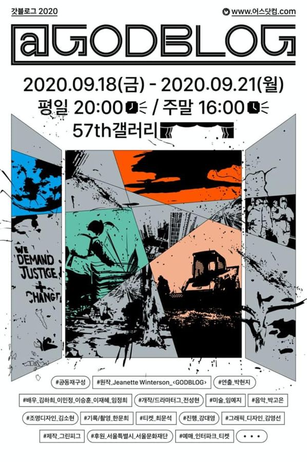

공동재구성, 박현지 연출

영국 부시 씨어터가 킹 제임스 성서 번역 400주년을 맞아 의뢰한 지넷 윈터슨의 〈GODBLOG〉는 신이 트위터를 한다는 설정으로 창세기를 2011년의 영국으로 가져온다. 이 작품을 '인간의 형상을 한 신이 백인 남성이 아니라 한국인이라면', '신이 한국에 있다면 어떤 트윗을 쓸까'라는 질문으로 다시 구성했다. 서양 문화의 근간인 성경으로 우리의 오래된 문화를 해석하고, 신의 시선으로 한국인의 사고방식을 점검한다.
2020.9.18–21 / 57th 갤러리
이전: 〈동시대인〉 | 다음: 〈CAVE-2021 Seoul Version〉
아카이브로 돌아가기 | 아무 작품이나
발행일 2026.11.9